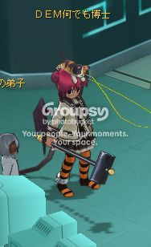
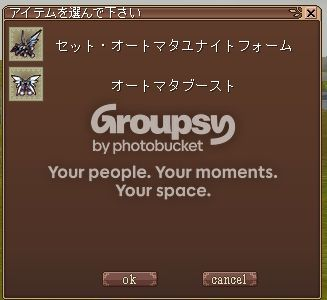
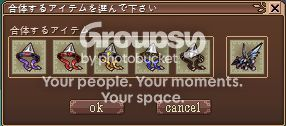
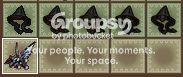

เงื่อนไข
- ต้องการเลเวล : 90 ขึ้นไป
- ค่าชื่อเสียง : ?
- เงื่อนไขในการจบอีเวนท์ : มีเลเวล 99 ขึ้นไป
- เงื่อนไขอีเวนท์ : ต้องเคยผ่านอีเวนท์ของออโต้มาตะทุกตัวและทำไดเมนชั่นพาร์ทให้ออโต้มาตะทุกตัวแล้ว
การดำเนินอีเวนท์
1.ไปที่ DEM customized room :
ให้ใส่ไดเมนชั่นพาร์ททุกชิ้นแล้วแปลงร่างให้อยู่ในร่าง Machina form แล้วคุยกับ DEM何でも博士

2.ไปที่ Electel Lab :
- 2.1. คุยกับ 試作・タンデムエレキテル
(ก่อนคุยต้องเปลี่ยนไดเมนชั่นพาร์ททุกชิ้นกลับไปเป็นออโต้มาตะก่อน)
(เมื่อคุยแล้วจะเปลี่ยนจุดเซฟมาเป็น Electel Lab)
(ขออภัยไม่มีภาพให้ดู
 )
)2.2. ให้ใช้ 試作・タンデムエレキテル
แล้วคุยกับ ออโต้มาตะแต่ละตัว เพื่อทำ Optimization Quest ของออโต้มาตะแต่ละตัว
เมื่อรับมาแล้วให้ลงไปยังชั้นใต้ดินเพื่อเริ่มทำเควส
(วิธีรับและำทำเควสส่วนนี้คล้ายกับเควส Electel Lab แต่เปลี่ยนเป็นรับเควสจากออโต้มาตะแทน)
(การรับ Optimization Quest นั้นจะต้องใช้แต้มเควส 1 แต้ม)
Optimization Quest1. Amethyst optimization [アメジスト最適化]
ระยะเวลา : ∞
ประเภทเควส : ล่า
สถานที่ :地下遺跡上層部
เป้าหมาย :
地下遺跡下層部
地下遺跡第二階層フォックスハウンドＲ１Ｅ 10ตัว
รางวัลที่ได้รับเมื่อเสร็จเควส :
フォックスハウンドＲ１ＥＥ 10ตัว
フォックスハウンドＢ３Ｅ 1ตัว最適化モジュール（アメジスト）
EP+3
----------------------------------------------------------------------------
2. Ruby optimization [ルビー最適化]ระยะเวลา : ∞
ประเภทเควส : ล่า
สถานที่ :地地下遺跡下層部
เป้าหมาย :
地下遺跡第二階層ギガントＲ３Ｅ 3ตัว
รางวัลที่ได้รับเมื่อเสร็จเควส :
キラーマシーンＥ 5ตัว最適化モジュール（ルビー）
EP+3
----------------------------------------------------------------------------
3. Topaz optimization [トパーズ最適化]ระยะเวลา : ∞
ประเภทเควส : ส่งของ
รับของจาก : クォーク博士 ใน Electel Lab
ชื่อของ : ６号ショップ商品 1 ชิ้น
ไปส่งให้ : エレキテル６号 ใน 地下遺跡第二階層
รางวัลที่ได้รับเมื่อเสร็จเควส :最適化モジュール（トパーズ）
EP+3
----------------------------------------------------------------------------
4. Sapphire optimization [サファイア最適化]ระยะเวลา : ∞
ประเภทเควส : รวบรวม
ของที่ต้องการ :古代の記録装置 10ชิ้น
รางวัลที่ได้รับเมื่อเสร็จเควส :
(ดรอปจาก 古代の遺品 ใน 地下遺跡第二階層)最適化モジュール（サファイア）
EP+3
----------------------------------------------------------------------------
5. Diamond optimization [ダイヤモンド最適化]ระยะเวลา : ∞
ประเภทเควส : รวบรวม
ของที่ต้องการ :優秀メダル（イベント） 1ชิ้น
รางวัลที่ได้รับเมื่อเสร็จเควส :
(ให้คุยกับ エレキテル５号 ใน 地下遺跡第二階層 แล้วเลือก 謎解きをする
จะมีคำถามขึ้นมาให้เราตอบแบบช่องกรอกพิมพ์ตอบเสร็จแล้วถ้าถูกจะได้รับ 優秀メダル（イベント）)最適化モジュール（ダイヤモンド）
EP+3
- 2.3. เมื่อรวมรวม
- 「最適化モジュール（アメジスト）」
「最適化モジュール（ルビー）」
「最適化モジュール（トパーズ）」
「最適化モジュール（サファイア）」
「最適化モジュール（ダイヤモンド）」

3.ไปที่ DEM customized room :
- 3.1. คุยกับ 博士の弟子 และให้หา
แล้วมาคุยกับ 博士の弟子 อีกรอบ
 「ディメンション硬石」×10
「ディメンション硬石」×10 「ディメンション水晶」×10
「ディメンション水晶」×10 「ディメンション翡翠」×30
「ディメンション翡翠」×30(ตอนช่วงเลเวลที่เริ่มทำ~98สามารถทำได้)

3.2. เมื่อมี เลเวล 99 ขึ้นไป ให้กลับมาคุยอีกครั้ง
และต้องจ่าย BASE EXP 10,000,000 และ JOB EXP 10,000,000
เมื่อทำเสร็จ ออโต้มาตะของเราก็จะรวมร่างกันเป็น セット・オートマタユナイトフォーム ได้แล้ว
และได้รับ EP เข้า EP battery อีก 10EP
วิธีรวมร่าง
1. กดปุ่ม change ที่ออโต้มาตะตัวใดตัวหนึ่ง

2. เมื่อกดปุ่ม change แล้วจะมีหน้าต่างขึ้นมาให้เลือกเหมือนตอนเปลี่ยนร่างออโต้มาตะเป็นพาร์ท
ตรงนี้ให้เลือกข้อ 2 แทน

3. เมื่อเลือกข้อ 2 แล้วจะมีขึ้นมาอีกหน้าต่าง หน้าต่างนี้จะเลือกร่างที่จะรวมร่าง
ให้เลือกข้อ セット・オートマタユナイトフォーム
*หมายเหตุ ข้อ オートマタブースト ในตอนนี้ยังใช้ไม่ได้ต้องไปทำ Heart of Bond(Part Automata Boosted) ก่อน*

4. เมื่อเลือก セット・オートマタユナイトフォーム แล้ว จะมีหน้าต่างดังภาพข้างล่างขึ้นมา
ให้ลากไอเทมออโต้มาตะมาใส่ให้ครบทุกตัวแล้วกด OK

5. เมื่อกด OK แล้วจะเป็นดังภาพ สามารถนำไปใช้ได้เลย

เมื่อต้องการจะแยกร่างให้กดปุ่ม change อีกรอบจะเป็นการแยกร่าง

รายละเอียดของเกราะ セット・オートマタユナイトフォーム
- เป็นเกราะ DEM แบบเซ็ต 1 ชิ้นเวลาใส่จะใส่ควบรวมทุกช่อง
- สามารถให้ผู้เล่นคนอื่นๆรวมทั้งเผ่าDEMด้วยกันPossessionได้
โดยแบ่งเป็น ช่อง Possession 1, 2 และ 3 เสมือนกับการ Possession ที่ อาวุธ, เกราะ และเครื่องประดับ ตามลำดับ
- เมื่อความทนทานของเกราะลดลงจะสุ่มลดความสนิดสนมของออโต้มาตะ
- เมื่อ รวมร่างจะคิดค่าความทนทานที่มีจากค่าความสนิดสนมของออโต้มาตะทุกตัวรวมกัน หากเกิน 30 จะมีค่าความทนทาน30
- ค่าสเตตัสของออโต้มาตะมีผลต่อค่าสเตตัสของเกราะ
โดยค่าที่เพิ่มจากออโต้มาตะจะถูกบวกเพิ่มเข้าไปในค่าพื้นฐานของเกราะด้วย
- - HP จาก Amethyst 30% และ Topaz 30%
- Atk จาก Ruby 100% และ Diamond 80%
- M.Atk จาก Diamond 100%
- Def จาก Amethyst 30% และ Topaz 40%
- M.Def จาก Amethyst 20% และ Topaz 100%
- S.Hit จาก Ruby 10% และ Sapphire 10%
- L.Hit จาก Sapphire 15%
- Mag.Hit จาก Sapphire 5%
- S.Avoid จาก Ruby 10%
- Critical จาก Diamond 10%
ค่าสเตตัสพื้นฐานของเกราะ[แบบไม่รวมสเตตัสจากออโต้มาตะ]
- น้ำหนัก / ความจุ / ความจุตอนสวมใส่ : 15.0/12.5/0.1
เลเวลที่ต้องการ : 99
รูปแบบการโจมตี : ทุบ
HP/MP/SP : +500/+250/+500
Atk(ทุบ/ฟัน/แทง/เวท) : 20/40/20/82
Def/M.Def : 35/35
S.Hit : 15
L.Hit : 15
Mag.Hit : 15
สเตตัสที่เพิ่ม :
- STR+12
DEX+8
INT+12
VIT+12
AGI+6
MAG+8
- - ความเร็วในการเคลื่อนที่+90 (เท่าบูส)
- เพิ่มอัตราแบกน้ำหนัก :+100
- เพิ่มอัตราแบกความจุ :+100
- ได้รับสกิล 「魂の器」